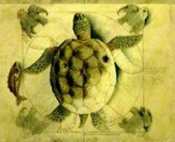
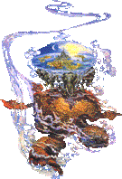
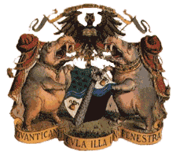

Le Disque-Monde est un monde rond et plat qui repose sur le dos de quatre éléphants
géants, eux-mêmes placés sur le dos d'une tortue interstellaire, A'tuin, qui est sur le
dos de...pas grand chose. A'tuin parcourt l'univers à la recherche de...elle seule le
sait. Car on ignore tout d'elle. Nul ne sait si cette tortue est mâle ou femelle. Les
savants du Disque-Monde ont établi une hypothèse qui veut que cette tortue soit en route
pour se reproduire ; si A'tuin est mâle, pas de problèmes... si elle est femelle, on est
mal ! Cette théorie porte le nom de "Big Bang" ou de "Grande Secousse".
Le Disque-Monde est un monde médiéval fantastique. Tous les personnages et créatures typiques y sont
représentés mais ils ne sont pas montrés comme nous en avons l'habitude: le héros n'a
plus de dents et pense que les choses les plus précieuses dans la vie sont de l'eau
chaude, une bonne dentition...et du papier hygiénique agréable à l'épiderme. Les plus
grands magiciens sont fainéants et ratent un sort sur deux, mais ne manquent pas l'heure
du repas. Les voleurs ne doivent pas trop voler, et ils sont embarrassés quand une de
leurs victimes a trop d'argent sur elle, ils lui font un reçu. Bref, ils sont déconcertants
et à tout moment peuvent nous surprendre par leurs comportements, leurs actions, leurs
repliques. Certains personnages vous laisseront sans voix:
Rincevent, le meilleur plus mauvais magicien du
monde. Le Bagage, coffre avec des centaines de petites
pattes, un estomac en béton armé et une rangée de dents. Cohen le barbare, 100 ans,
plus de dents, sciatique et rhumatisme, et pourtant le meilleur ! Le Bibliothécaire de
l'Université Invisible, un Orang-Outang. Mémé Ciredutemps,
une vieille sorcière et la MORT, en fait une partie,
Azraèl, seul personnage présent dans toutes les Annales.
"Dans un ensemble lointain de dimensions récupérées à la casse,
dans un plan astral nullement conçu pour planer, les tourbillons de
brumes stellaires frémissent et s'écartent...
Voyez...
La tortue la Grande A'Tuin apparaît, elle fend d'une brasse paresseuse
l'abîme interstellaire, ses membres pesant recouverts d'une givre
d'hydrogène, son antique et immense carapace criblée de cratères
météoritiques. De ses yeux vastes comme des océans, encroûtés de chassie
et de poussière d'astéroïdes. Elle fixe le But Ultime.
Dans sons cerveau plus grand q'une ville, avec une lenteur géologique,
Elle ne songe qu'au Fardau.
Une bonne partie du fardeau est évidemment due à Bérilia, Tubul,
Ti-Phon l'Immense et
Jérakine, les quatre éléphants géants dont les larges épaules bronzées par les
étoiles soutiennent le disque du Monde que la longue cataracte enguirlande sur
son vaste pourtour et que surplombe le dôme bleu layette des Cieux.
L'astropsychologie n'est toujours pas parvenue à établir à quoi ils
pensent.
L'existance de la Grande Tortue restait du domaine de l'hypothèse
jusqu'au jour où Krull, un petit royaume cachottier dont les montagnes
les plus proches du Bord saillent au-dessus de la Grande Cataracte,
conçut un système de portique et de poulies à la pointe de son rocher le
plus à pic et fit descendre plusieurs observateurs par-dessus le Rebord
dans un vaisseau de cuivre aux hublots de quartz afin qu'ils regardent
par-delà les voiles de brume."Cette citation est tiré du premier
livre de la série du Disque-Monde: La huitième
couleur (The colour of magic)
Géographie du Disque-Monde
 Une
carte du Disque-Monde par John Kidby
Une
carte du Disque-Monde par John Kidby
La géographie sur le Disque-monde n'est pas très précise. On peut
cependant dénombrer quatres continents (le Continent Sans Nom, le
Continent de Klatch, le Continent Contrepoids, et le Continent XXXX).
Ces quatres continents sont décrit ci-dessous
Le Continent Sans Nom, représente à peut de chose près le centre névralgique
des écrit du Maître. Ses principales caractéristiques topographiques sont les montagnes du Bélier
(région qui fait figure de premiers fournisseur de sorcières et autre mages) et les plaines de Sto.
Il s'étant du moyeu à la Mer Circulaire dans la région d'Ankh-Morporks.
On y retrouves les villes de Sto Lat, Quirm, Pseudopolis, Olive-Oued et évidemment Ankh-Morpork.
Le Continent de Klatch peut, sans trop ce tromper, être qualifié d'Afrique
du Disque-Monde. On retrouve toute une panoplie de pays "méditerranéens". Les principaux
pays du continent sont Le Jolhimôme, Ephèbe, Omnia et l'empire capitale Klatch.
Le Continent Contrepoids est très petit et est composé
principalement de l'Empire Agatéen. Personne ne va ou
ne sort de cet empire (en théorie) car il est entouré
d'un mur gardé. Pour les habitants de l'empire ceux qui
habitent à l'exterieur du mur n'existent pas ou sont des
fantômes. Comme tout bon empire il est dirigé par un roi
sous la tutelle d'un redoutable grand vizir. Sur ce
continent, l'or est tellement abondant qu'il n'a aucune
valeur (c'est bien le seul endroit sur le disque).
Le Continent XXXX est quasiment inconnu. Il est souvent considéré comme un mythe.
D'après les enciens récits, il est peuplé d'hommes à la peau noire qui chasse à l'aide d'étranges batons tordus (quelle idée !).
Des rumeurs parlent de rats géants sauteurs, de canards à fourure dépourvus d'ailes mais à quatre pattes,
ainsi que de poolets gigantesques incapables de voler. Et puis quoi encore ! On parle aussi d'une colonie de mages perdus
qui ne se nourrirait que de crevettes et glisseraient sur l'eau à l'aide de planche.
Mais il n'y a pas que les continents sur le disque, il y a aussi les
villes. Voici une petite liste des villes les plus connues du disque :
-
Ankh-Morpork 
La plus grande ville sur le disque. Elle est composée des villes jumelées
d'Ankh et Morpork, la rivière Ankh sépare les deux. Ankh-Morpork est au
bord de la mer circulaire. Dans les Plaines de Sto. Il est dit qu'Ankh-Morpork
est construite sur du Terreau, en réalité elle est construite sur Ankh Morpork.
Le blason d'Ankh-Morpork contient deux devises:
MERVS IN PECTVM ET IN AQVAM - Pur en esprit et en eau
Et
QVANTI CANICVLA ILLE IN FENESTRA - Combien est ce petit chien dans la vitrine
Le dirigeant politique actuel d'Ankh-Morpork est le Seigneur Havelock Vétérini
officiellement élu par la ville. Ankh-Morpork exerce la politique suivante :
«Un homme, une voie.» Vétérini est cet homme! Ankh-Morpork a eu l'habitude
d'être gouverné par des rois, mais ceci à eu une fin pointue lorsque le
commandant du guet de l'époque exécuta le Roi. C'était un travail qui devait
être fait, mais malheureusement beaucoup des citoyens de l'époque n'ont
pas été d'accord. Il n'y a jamais eu de Roi dans Ankh-Morpork depuis, mais
il circule une rumeur comme quoi un héritier du trône erre dans la ville.
En plus de Vétérini, la ville est dirigée par une série de guildes. Ces
guildes s'occupent de leurs propres affaires et assurent qu'aucunes activités
non autorisées n'a lieu. Le guet de la ville manipule aussi pas mal du crime
de la ville et il est souvent préférable d'être attrapé par le guet que
par les guildes.
Beaucoup de secteurs différents composent la grande ville d'Ankh-Morpork
Les Ombres, Pseudopolis, le Tambour Rafistolé.
-
Lancre  est situé en plein milieu des montagnes du Bélier. C'est en fait un village
qui ne comprend que deux rues et un chateau. Lieu de résidence des trois
sorcières Esmé Ciredutemps, Magrat
Goussedail et Gytha Ogg.
est situé en plein milieu des montagnes du Bélier. C'est en fait un village
qui ne comprend que deux rues et un chateau. Lieu de résidence des trois
sorcières Esmé Ciredutemps, Magrat
Goussedail et Gytha Ogg.
-
Le Jolhimôme, appellé aussi Vieux Royaume et
Royaume du Soleil. Il fait environ 3 km de large sur 250 de long. Il entretient
une grande tradition de cultures : ail, melon et, étant donné leur empiettement
grandissant sur les terres fertiles, Pyramides.
-
Ephèbe.
Système politique: tyranie (forme de démocratie).
Principale exportation: idées.
C'est le pays du bourzuki (une sorte de chien), du retsina (une sorte de
diluant à peinture) et surtout des philosophes. En effet, Ephèbe produit
plus de philosophes au mettre carré que n'importe où ailleurs dur le Disque.
Le sport nationnal et la trouvaille philosophique qui consiste à sortir
du bain directement dans la rue en crant "Eurêka !" (qui
se traduit par : "Une serviette, donnez moi une serviette.").
-
Omnia ou la cité du dieu Om. On y a dépassé
depuis longtemps le stade de l'inquisition pour arriver à celui, nettement
plus intéressant, de l'exquisition. Ici le culte du Grand Dieu Om punit
de la Quisition (inquisition + exquisition) ceux qui prétendent que le monde
n'est pas rond et en orbite autour du soleil.
-
Cori Celesti, placé au centre du Moyeu, n'est
pas une ville. Elle porte en sont sommet Dunmanifestine, demeure des dieux
assez classique avec collonnes de marbre et sol immense impossible à moquetter.
C'est là que ceux-cipasse le temps comme d'autre essayeraient de trouver
comment occuper un après midi pluvieux.